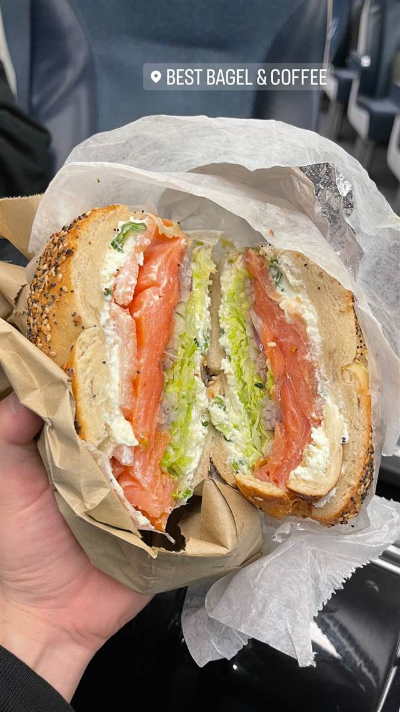
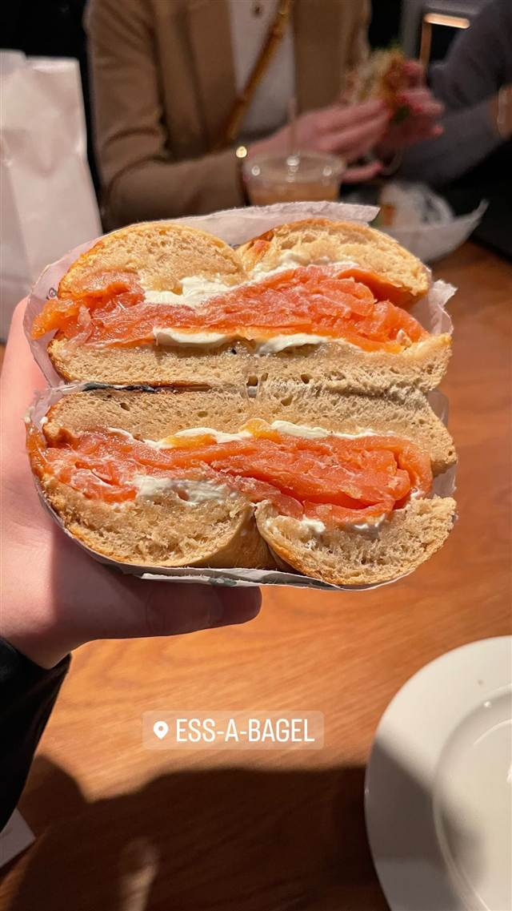

Keens Steakhouse
マトンチョップと5万本超の陶製パイプが並ぶ1885年創業の老舗
KEENS STEAKHOUSE
1885年、Albert Keenが劇場街ヘラルド・スクエアに開いた老舗ステーキハウス。名物のマトンチョップは俳優たちが幕間に駆け込んで食べたと伝わり、店内には5万本を超える陶製パイプのコレクションが飾られ、かつてセオドア・ルーズベルトらも名を連ねた「パイプクラブ」の歴史を今に伝える。
TRIVIA
へえ、という話
- 店内に5万本を超える陶製パイプ（チャーチワーデンパイプ）が飾られており、世界最大級のコレクションとされる
- かつて会員制の「パイプクラブ」があり、セオドア・ルーズベルト、ベーブ・ルース、アインシュタイン、マッカーサー将軍らが名を連ねた
- 隣接する劇場の俳優たちが衣装のまま駆け込み、幕間にマトンチョップを食べて舞台に戻ったと伝わる
- かつて栄えたヘラルド・スクエア劇場街で唯一現存する店とされる
REVIEWS
みんなの声
「マトンチョップと老舗の風格」に注目
- 名物のマトンチョップやTボーンステーキの味を評価する声が多い
- 料理の量の多さと知識豊富なスタッフの丁寧な接客を評価する声が多い
- 料金がやや高めで平日でも混雑しやすい点を指摘する声が少なくない
TripAdvisor
| 創業 | 1885年創業 |
|---|---|
| 系譜 | 劇団員の社交クラブ「The Lambs Club」の一部から派生し、1885年にAlbert Keenが独立開業 |
| 看板 | マトンチョップ（マトンのロース肉）、ステーキ |
| こだわり | 1935年には100万枚目の本物のマトンチョップを提供したと伝わる |
| 予約 | 予約可 |
| 場所 | 34th St-Herald Sq 72 W 36th St, New York, NY 10018 |
食べたもの：ステーキ
NEARBY
近い店・同じ系統の店
-
 ピザ タイムズスクエア-42丁目駅
Joe's Pizza (1435 Broadway店)
映画スパイダーマン2に登場したNY屈指の名物ピザ
ピザ タイムズスクエア-42丁目駅
Joe's Pizza (1435 Broadway店)
映画スパイダーマン2に登場したNY屈指の名物ピザ
-
 ルーフトップ・ラウンジ 34丁目-ハラルドスクエア駅
Top of the Strand Rooftop Bar
開閉式ガラス屋根の下エンパイア・ステート・ビルを望むバー
ルーフトップ・ラウンジ 34丁目-ハラルドスクエア駅
Top of the Strand Rooftop Bar
開閉式ガラス屋根の下エンパイア・ステート・ビルを望むバー
-
 ルーフトップ・ラウンジ 34th St-Herald Sq
Monarch Rooftop
18階のペントハウスに広がる465平米の空間から望む眺望
ルーフトップ・ラウンジ 34th St-Herald Sq
Monarch Rooftop
18階のペントハウスに広がる465平米の空間から望む眺望
-

ベーグル ペンシルベニア駅/34丁目駅 Best Bagel & Coffee ベーグル戦争と呼ばれる激戦区、21種のベーグルとチーズ24種 -

ベーグル レキシントン・アベニュー/51丁目駅 Ess-a-Bagel (3rd Ave店) 店名は「ベーグルを食べな」の意、1976年創業のNY老舗ベーグル店 -
 ステーキ 神泉
neo（ネーオ）
元焼き鳥屋を改装、予約不要で楽しむイタリアンナチュラルワイン
夜 ¥4,000～¥4,999
ステーキ 神泉
neo（ネーオ）
元焼き鳥屋を改装、予約不要で楽しむイタリアンナチュラルワイン
夜 ¥4,000～¥4,999